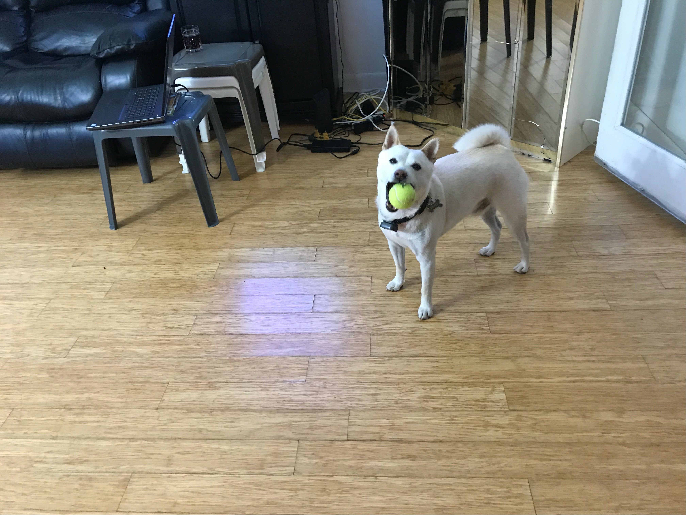
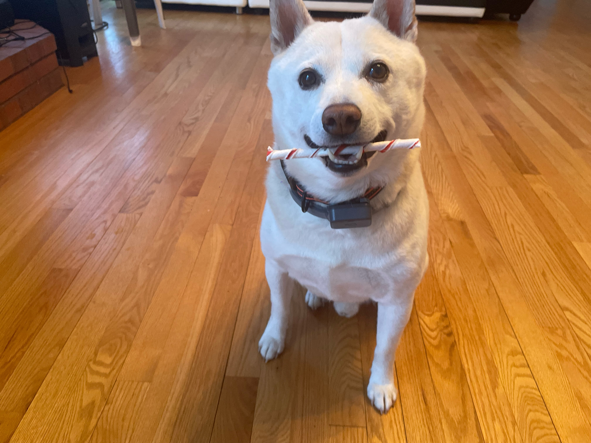

Hero's Favorites
Home
Hero's Favorites
Image Gallery
Our Story
Things Hero Loves

Hero with a tennis ball in his mouth
One of Hero's absolute favorite treats are the twist sticks from Dingo Brand. If you want to check them out heres a link to
Twist Sticks
.